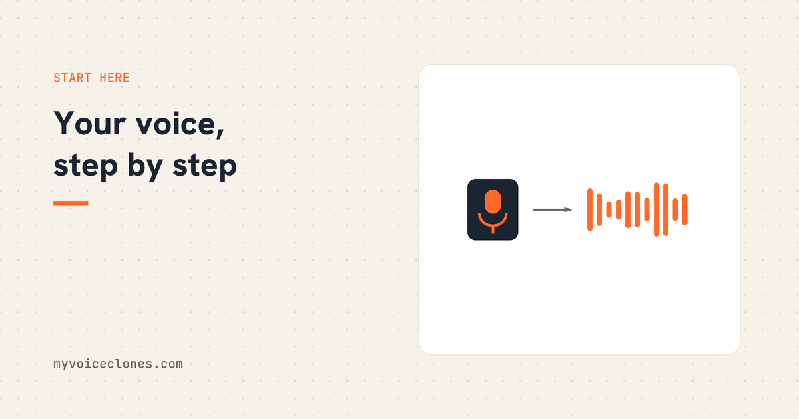

To clone your own voice, record 1 to 3 minutes of natural talking in a quiet room, feed it to a voice cloning tool, and generate speech from typed text. With VoiceClone this happens entirely on your own Windows PC, free to try, with nothing uploaded to any server.
The first time I heard my own cloned voice say a sentence I had only typed, I sat there for a good minute just playing it again. It was my accent, my pauses, even the little breath I take before a long sentence. I had spent years recording narration for videos the hard way, where one wrong word at minute four means you record minute four again, and suddenly the wrong word was just a thing I could retype.
So this is the guide I wish someone had handed me at the start. Plain words, real steps, and the honest parts included.
What voice cloning actually does
You give the software a short recording of you talking. It studies how you sound, the tone, the rhythm, the way your vowels sit, and builds a voice model from it. After that you type any text and it speaks that text as you. The recording is called the reference, and the quality of that reference decides almost everything, which is why half of this guide is about it.
There are two levels of cloning, and knowing the difference saves you a lot of confusion:
Instant cloning works from 20 seconds to 3 minutes of audio and takes about a minute to set up. It gets you a strong resemblance, the kind where people who know you say "that sounds like you" but you yourself can hear it is not perfect. When I measure my own instant clones with a speaker matching model, they score in the 65 to 85 percent range against my real voice.
Trained cloning takes the same recording and actually trains the model on your voice for a while, under an hour on a normal NVIDIA graphics card. That is where the clone stops being a resemblance and starts being a match. My own trained voice scores around 96 percent, and I use it for real published videos.
Step 1: record 1 to 3 minutes of yourself
Find a quiet room, take your phone or any mic, and just talk naturally for a couple of minutes. Read something you wrote, or tell a story about your day. The mistakes people make here are always the same ones, because I see the uploads:
- Announcer voice. People perform when a mic appears. The clone then sounds like a performance of you, not you. Talk like you talk to a friend.
- Background noise. The clone learns everything in the recording, including your fan. I once measured this on my own reference clip: swapping a noisy sample for a clean one of the same sentence cut the noise in my generated audio by 24 decibels, which is roughly 16 times quieter. The room matters that much.
- Cutting out breaths. Leave them in. Breaths are part of how you sound, and a clone without them sounds like a robot doing an impression.
One to three minutes of clean, natural talking is the sweet spot. More than that helps training, less than 20 seconds and the clone gets thin.
Step 2: get the free app and make the clone
The full app, VoiceClone, runs a serious model on your own PC, and this is where your actual voice shows up, accent and breaths included. The free version has no account and no email, and it lets you clone one voice, yours, hear it speak, and even run one full training, so you can judge the quality with your own ears before any money moves. About a minute after you add your recording, you will know whether this whole idea excites you the way it did me.
Inside the app the flow is short. You add your recording, and it runs five quality checks on it, length, volume, clipping, noise, and whether it actually hears speech, each with a plain fix tip if something fails. Then you type your text and press generate.
Under the hood it does something I have not seen the free tools do: it generates several takes, listens to every one with a speech recognizer, grades each word, and hands you the best take with every word marked green, orange, or red. AI speech is a dice roll per take, the same text can come out perfect or garbled, and most tools just hand you one roll and wish you luck. Checking the takes is the difference between a toy and a tool you can publish with.
Step 3: fix the words that came out wrong
Some word will come out wrong eventually, usually a name or a brand. In my case the word "SQL" kept coming out as "desql", which was funny the first time and annoying the tenth. In VoiceClone you click the bad word on the timeline, ask for a few options and pick one, or say the word once in your own voice and it learns your pronunciation permanently. The rest of the clip stays untouched. Whatever tool you use, check whether fixing one word means regenerating everything, because that one detail decides how much time you lose every week.
Step 4: train it, if you want the real match
If the instant clone is 85 percent of you, training is how you get the rest. VoiceClone has a button called Make it perfect that trains on your own computer, no accounts, no cloud, and installs the trained voice into your folder when it finishes. I tested this on a modest 4 GB laptop GPU and it completed a full training run, so you do not need a monster machine, just patience for under an hour.
The full app features past the free tier, unlimited length, the editor, training, and exports, open with a single $49 license from Gumroad. One payment, two computers, 30 day refund. I priced it against the monthly tools on purpose, because paying rent on your own voice never sat right with me.
The honest limits
It speaks English only. It cannot sing. A slow PC without a graphics card works but takes minutes per paragraph instead of seconds. And no tool on earth gives you a 100 percent identical twin from 30 seconds of audio, whatever the ads say. The honest maximum is a strong instant clone in a minute and a trained near match in an hour, and that is exactly what I built toward.
One more thing, because it matters: clone your own voice, or a voice you have clear permission to use. And when a clip could pass for a real recording somewhere it matters, say it is AI made. I treat that as part of the craft, not a restriction.
FAQ
How long does it take to clone your own voice?
About a minute for an instant clone from a 1 to 3 minute recording. A trained clone, which sounds much closer, takes under an hour on a normal NVIDIA graphics card with VoiceClone's local training.
Can I clone my voice for free?
Yes. The free VoiceClone desktop app clones one voice, yours, at full quality, with one complete training included, so you hear the real thing before paying anything. Unlimited use is a $49 one time license, not a subscription.
Do I need to upload my voice somewhere?
Not here. VoiceClone runs entirely on your own PC. There is no server involved, which is worth checking for any tool you consider, because most cloud cloners keep your voice recording on their systems.
What is the best recording length for voice cloning?
One to three minutes of natural, quiet talking. Under 20 seconds gives a thin clone, and hours of audio only help if you are doing full training.
Start with the two minute version
Do not overthink the first attempt. Record two minutes of yourself talking about anything in a quiet room, drop it into the free app, and listen. If hearing yourself say typed words does something to your head the way it did to mine, you will know within the minute.
Hear your own voice come back.
The free Windows app clones and fully trains one voice, yours, on your own PC. No account, no upload, and the download starts right away.